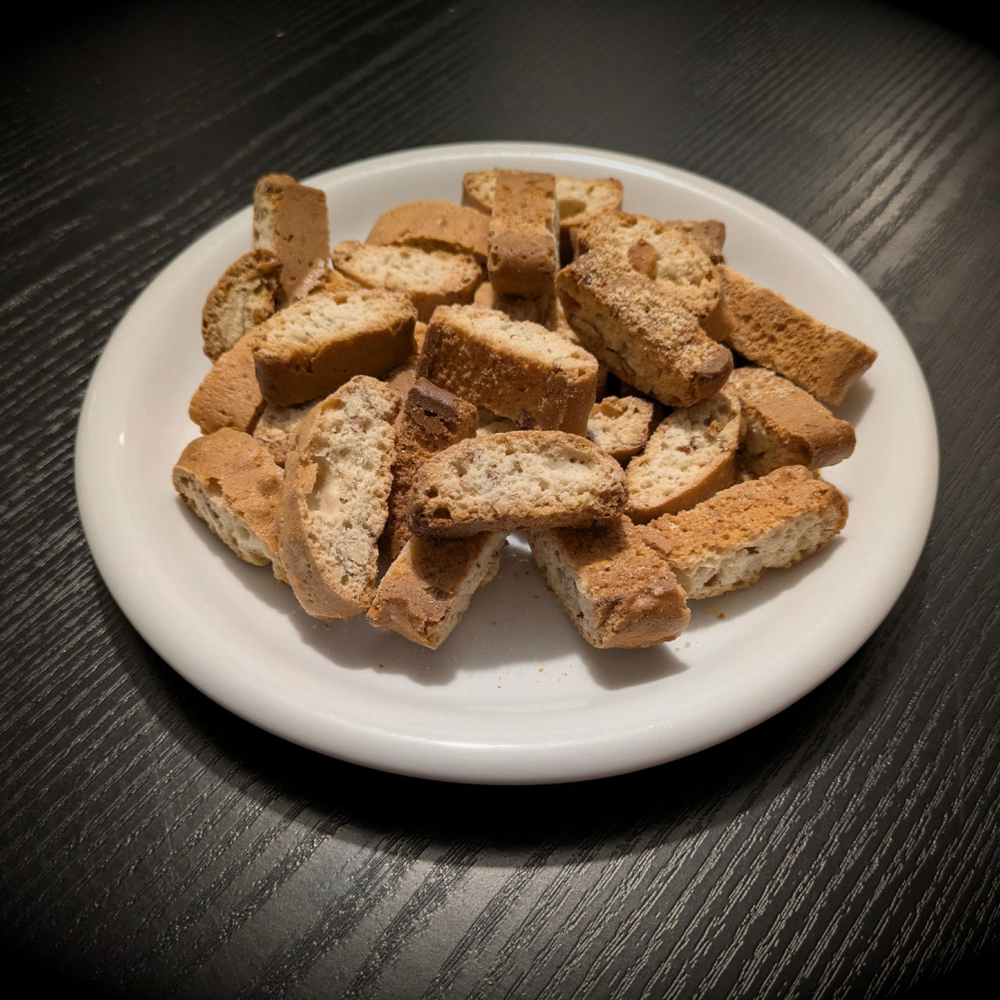
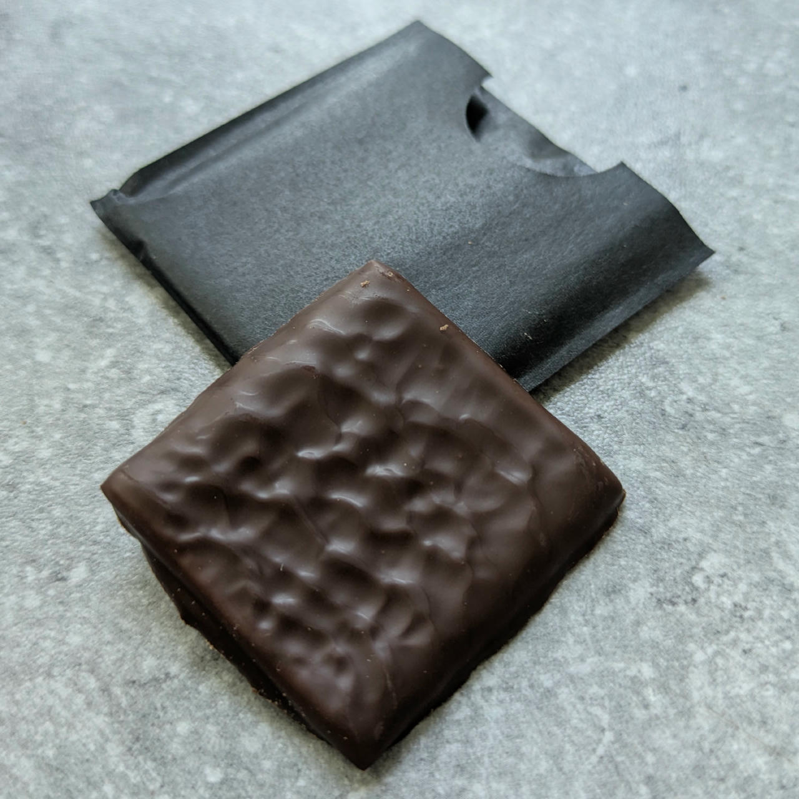
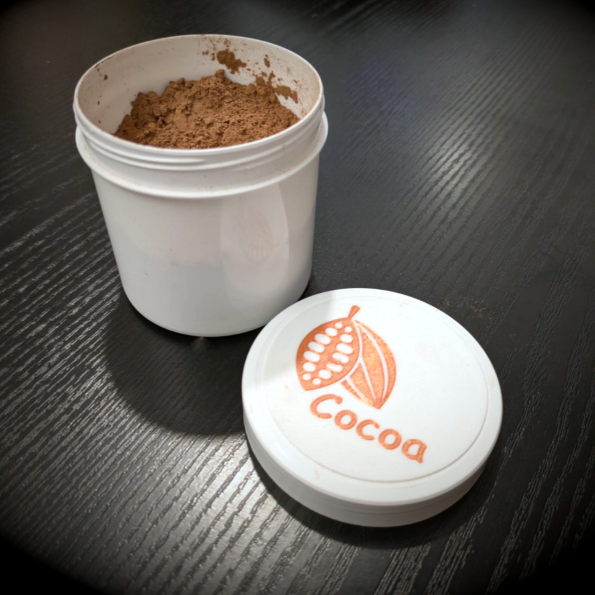

Ingredients ¶
¶
Here you can find some background information about common ingredients in ice cream recipes.
Freezing Point Depression Factor (PAC) and Sweetness (POD)¶
ℹ️ This info is at the very top because you will most often need it for reference. If you're new to ice cream making, first read the linked glossary definitions of all those abbreviations, or skip the table for now and read on further below.
Common Ingredient PAC / POD / GI Values¶
Freezing point depression factor (FPDF / PAC), sweetness (POD), and glycemic index (GI) of common ingredients, sorted by PAC.
| FPDF/PAC | POD | GI | Ingredient | Comment |
|---|---|---|---|---|
| 740 | -/- | -/- | Ethanol | Do not use pure ethanol in ice cream |
| 590 | -/- | -/- | Salt | Sodium chloride (NaCl) |
| 370 | 60 | 5 | Vegetable glycerin | |
| 296 | -/- | -/- | Hard liquor | 40 vol% (80 proof) |
| 280 | ≈75 | 0 | Erythritol | POD ranges from 70 to 80 |
| 220 | 100 | 12 | Xylitol | |
| 190 | 70 | 0 | Allulose | |
| 190 | 70 | 100 | Dextrose | 100% glucose (monosaccharide) |
| 190 | 170 | 19 | Fructose | |
| 190 | 100 | ≈68 | High-fructose corn syrup (HFCS-55) | fructose >55% + glucose |
| 190 | ≈95 | ≈65 | High-fructose corn syrup (HFCS-42) | fructose >42% + glucose |
| 190 | ≈105 | 50 | Honey | Some sources claim a POD of up to 150 |
| 190 | ≈130 | 87 | Invert sugar | a/k/a inverted sugar, invert syrup, (invert) sugar syrup |
| 190 | 60 | 9 | Sorbitol | |
| 180 | ≈160 | 11 | Agave Syrup | POD ranges from 140 to 180; ~80:20 fructose / glucose |
| 100 | 16–40 | 45 | Lactose | Milk sugar |
| 100 | 10 | 6 | Polydextrose | |
| 100 | 100 | 65 | Sucrose | Table sugar, 1:1 glucose:fructose |
| 100 | 45 | 38 | Trehalose | Disaccharide, found in plants & fungi; also improves texture / icyness |
| ≈90 | ≈55 | ≈75 | Glucose Powder (40/42 DE) | 5–7% water; also called atomized / dehydrated glucose |
| ≈85 | ≈45 | ≈98 | Rice syrup | ~35:50:15 glucose / maltose / various polysaccharides |
| 80 | 50 | ≈75 | Glucose Syrup (42 DE) | 25% water |
| 77 | ≈57 | 55 | Molasses | Less sweet than sugar, with a complex flavor profile (bittersweet) |
| 68 | ≈66 | 54 | Maple syrup | High in sucrose, but also has fructose and glucose |
| 61 | 40 | ≈56 | Light corn syrup (32 DE) | ~15:15:70 glucose / maltose / various polysaccharides |
| 50 | -/- | 85 | Modified corn starch | Possibly lower GI for some modifications |
| ≈39 | 50 | 2 | Isomalt | PAC ranges from 36 — 42; 2.36 kcal/g |
| 34 | 21 | 110 | Maltodextrin (18 DE) | |
| 22 | 10 | 1 | Inulin | |
| <20 | ≈10 | <55 | Resistant Dextrin (E1400) | GI typically ranges from 25 to 48 |
| 10 | 44 | 35 | Maltitol (E965) |
🧪 Sources
* https://www.icecreamscience.com/blog/corn-syrup-used-ice-cream
Note that natural ingredients like molasses or maple syrup can slightly differ depending on brand, check the sugar content in the nutrition information. For recipe balancing, this normally will have no impact though.
Some ingredients can make the frozen base harder, one way to account for that is using a hardening factor (HF; negative PAC):
- Cocoa powder 21%: -160
- Cocoa powder 11%: -130
- Vegetable fat: -90
- Cocoa butter: -90
- Cocoa paste: -160
- Hazelnut paste: -90
Solidification Point of Common Oils
| Type of Oil | °C | °F |
|---|---|---|
| Avocado | -6 | 20 |
| Coconut | 24 | 75 |
| Olive (native) | 10 | 50 |
| Olive (refined) | -6 | 20 |
| Peanut | -1..3 | 30..37 |
| Soybean | -18 | 0 |
| Sunflower | -17 | 1 |
Exact temperatures can vary due to different grades of purity.
In comparison, milk fat hardens as a mixture of solid and liquid phases between approximately -40°C and 40°C, caused by its complex composition of various triglycerides.
How to Dial in Sweetness?¶
Bulky sweeteners (granules / powders) often have a high PAC of around 200 or more, and their dosage influences the ice cream's scoopability accordingly. Thus, determine their amount first, fitting the rest of the recipe's ingredients.
Then to arrive at the desired sweetness, ultra-sweet liquids (sucralose, stevia/steviol, monk fruit) are great since they keep the PAC at the same level (have no effect on the freezing point), since they lack the necessary mass. So they only increase the POD, and liquid stevia or sucralose are most commonly used here. If in powdered form, make sure the bulking agent has no effect – quite often erythritol (PAC = 280) is used since it adds no calories.
In "classic" recipes, a similar effect is used by balancing table sugar with sweeteners that have a higher PAC and a lower POD, like dextrose. If both PAC and POD are too low, invert sugar or fructose give a boost to both at the same time.
See the table above and the next section for details.
Sweeteners¶
Allulose¶
Allulose is a low-calorie sweetener (about 10% the energy of sucrose, and a GI of zero), that can be used to replace some or all of the sugar in a recipe, and does not count as "added sugar." It is offering a clean, well-rounded sweetness and similar texture while reducing the overall sugar and calorie content.
Using it as a single sweetener in ice cream might result in a poorer texture (slight graininess), so if you experience that use it in combination with e.g. erythritol.
It is a "rare sugar" that is naturally found in small amounts in certain foods, but is also produced commercially. In ice cream, allulose helps achieve a desirable sweetness, texture, and freezing point depression.
In 2025, allulose is considered GRAS by the FDA, and still being evaluated by EFSA in the EU.
Erythritol (E968)¶
Sugar alcohol with a cooling mouth-feel and about 75% as sweet as sugar (add ⅓ when swapping). Erythritol is non-caloric.
Erythritol lowers the freezing point of water drastically (2.8x compared to sugar).
It has a strong tendency to crystallize in long-term frozen state (weeks), leading to a hard texture. This can be alleviated by adding at least 0.05% of a stabilizer, and staying below 8% of total weight. Mixing with at least 40% of xylitol has the same effect.
Dosage: 6.5–8% of an ice cream base.
Jungbunzlauer Study: Soft Ice Cream with Erythritol¶
The Jungbunzlauer study Erythritol makes a difference – tasty and creamy ice cream without added sugar from 2015 looks at no-sugar-added dairy ice cream using erythritol, that maintains the indulgence of traditional sugar-based products.
In ice cream, erythritol presents two main challenges:
- Harder Texture / Cold Sensation: Due to its small molecular size, erythritol has a threefold higher freezing point depression factor than sucrose, requiring lower temperatures to achieve the desired texture.
- Crystallization Tendency: Erythritol has a strong propensity to crystallize after freezing, which significantly hardens the ice cream texture during storage.
To overcome these issues, the study found that a crystallization inhibitor, like other polyols (sorbitol, maltitol, xylitol), is essential to soften the ice cream structure.
An ideal ratio of three parts erythritol to two parts of a second polyol is suggested. The optimal usage level for erythritol was determined to be between 6.5% and 8.0% of the total recipe to maximize taste benefits without causing irreversible textural hardening. High-intensity sweeteners, such as sucralose, are also needed to balance sweetness, as polyols generally provide less sweetness than sugar.
SweEX (Erythritol / Xylitol Blend)¶
A mix of Erythritol and Xylitol (ratio 3:2) I dubbed SweEX that takes the results of the Jungbunzlauer study into account (details see right above).
It has a PAC of 256, a POD of ≈85%, and a GI below 7 (i.e. below that of xylitol).
💡 Swapping in Allulose
Use 133% of the given amount of SweEX to attain about the same PAC and POD values. That means using 75% of a given pure allulose amount in the other direction.
Inulin¶
Inulin is a naturally occurring polysaccharide, and used to improve mouthfeel, stability, acceptability of low-fat ice creams, and forms a gel-like network that binds water.
Inulin has fewer calories (2 kcal/g) compared to fat (9 kcal/g) or sucrose (4 kcal/g).
Fat can be reduced by 50% with 5% native inulin — i.e. up to 35g in a Deluxe tub. It improves creaminess perception and melting resistance. Typically 10-20g in a 680g mix is enough.
RDA is 8-18g (tested for up to 24 weeks). Most common side effects include gas, bloating, diarrhea, constipation, and cramps. As a fructan, inulin has minimal impact on increasing blood sugar.
Natural chicory / agave inulin has 8g sugar, and 88% fiber. Further processing leads to HP inulin that has 97% fiber and 0% sugar, and it needs to be heated to 65°C to dissolve.
Source: https://www.icecreamscience.com/blog/why-is-inulin-used-in-ice-cream
Topinambur or Jerusalem artichoke syrup has about 36% inulin, 1% glucose, and 2% fructose, at a density of ≈1.3 g/ml.
Isomalt (E953)¶
Isomalt is a mixture of two disaccharide alcohols and used primarily for its sugar-like physical properties. It has a very low GI, is tooth-friendly, and provides about half the energy of table sugar.
Isomalt is about half as sweet as sugar and has a similar taste. It has high heat resistance and will not melt until it reaches 145°C.
There is no ADI value (Acceptable Daily Intake), but moderation is advised to avoid potential digestive issues. Suggested is an upper limit of 50g per day for adults, while children should consume less.
It is very similar to maltitol, and requires care regarding daily intake just like other sugar alcohols. Chemically it is a mix of glucose (50%), sorbitol (25%), and mannitol (25%).
⚠️ Too much isomalt can lead to a soft, sticky texture.
Maltitol (E965)¶
Maltitol is a white crystalline powder that can be used as a bulking agent, emulsifier, humectant, stabilizer, sweetener, and thickener. It is a type of sugar alcohol, or polyol, derived from corn syrup.
Maltitol is about 90% as sweet as sugar and has a similar texture, making it a good alternative for sugar, with about half as many calories. The body does not absorb maltitol well, leading to a low glycemic index of 35.
Large amounts of maltitol (over 20-30g) can have a laxative effect, but on the positive side it does not promote tooth decay.
Maltitol is commercially produced by hydrogenating maltose, which comes from starch.
Polydextrose (E1200)¶
Polydextrose is a synthetic ingredient made from glucose, sorbitol, and citric acid, and used as a bulk agent, filler, and humectant. It can replace fat and sugar, reduce calories, and improve texture and mouthfeel. It is considered a prebiotic fiber and only has about 1 kcal/g.
It is a long-chain, sugar-like molecule that is not fully digestible by human enzymes. EU regulations require labelling above 15g for possible GI issues in sensitive individuals, so take that into account. From a safety standpoint, there are no limits set.
Compared to inulin, polydextrose is also a soluble fiber and very similar in sweetness and GI, but has a five times higher PAC of 100.
Resistant Dextrin (E1400)¶
Resistant dextrin (RD) is a soluble dietary fiber and prebiotic, with a very low sweetness (POD ≈10%) and a bland taste. It has a low viscosity, is easily dissolved in cold water, and resists heat, acidic conditions, and freezing. Its GI is below 55 and typically ranges from 25 to 48, which is considered low.
All these numbers mean you can provide body to ice cream, without effects on sweetness or causing blood sugar spikes. Compared to maltodextrin, which has a very high GI of 110 and a PAC of 34, RD has almost no effect on the freezing point, and minimal blood sugar effects.
It's often used as a fat substitute or to add creaminess, and can also help prevent ice crystal formation. It can replace or accompany inulin — a combination of inulin and resistant dextrin may offer superior prebiotic benefits with less gas production than inulin alone.
Dextrin is a type of modified starch, produced via partial hydrolysis from different sources like corn, potato, rice, or wheat.
Sorbitol (E420)¶
Sorbitol is a sugar alcohol found naturally in fruits and vegetables and used as a sweetener, humectant, and texturizer. It is 60% as sweet as sugar and non-cariogenic, has only 2.4 kcal/g and a low glycemic index, and a high PAC of 1.9 (same as dextrose). It tastes like sugar, but creates a noticeable cooling effect in the mouth.
Using sorbitol in ice cream improves its texture and stability, providing a smoother, creamier consistency by lowering the freezing point. Its anti-crystallization properties reduce ice crystal formation, and also help controlling the tendency of erythritol to harden an ice cream in long-term storage.
As with all sugar alcohols, keep the effects on the digestive system in mind (max. 10% of a recipe).
Stevia (E960)¶
Stevia is a natural, calorie-free sweetener derived from the leaves of the Stevia rebaudiana plant, native to South America. The leaves contain compounds called steviol glycosides, which are significantly sweeter than sugar (around 200-400 times sweeter).
Many people find stevia to have a slightly bitter or licorice aftertaste.
In ice cream, stevia in its pure form (as a liquid) makes it simple to dial in the sweetness of a base without influencing its texture and PAC value. You have to be aware of the effects of bulking agents on your base when it comes in powdered form; one common example is the use of erythritol for that, with significant FP depression changes.
Sucralose (E955)¶
Sucralose is a non-caloric artificial sweetener that is about 600 times sweeter than table sugar. It is derived from sucrose through a chemical process. Sucralose is commonly known by the brand name Splenda.
Like stevia, when used in liquid form, it makes it simple to dial in the sweetness of a base without influencing its texture and PAC value.
Trehalose (E965)¶
Trehalose is a disaccharide (composed of two glucose molecules), naturally occurring in plants, fungi, shellfish, and insects. It is also known as mycose or tremalose, and has the same PAC as sugar, but is only half as sweet.
Sorbets are the ideal application for trehalose, where it supports hitting the right amount of solids and freezing point depression. When replacing sucrose, it increases the PAC while keeping sweetness the same.
Trehalose is much less soluble than lactose and offers way less water control, and is an uncommon ingredient leading to potentially high prices. Use it in concentrations of 2% to at most 8%.
Trehalose can be caramelized, but it requires a higher temperature compared to regular sugar (200°C instead of 180°C). When heated, trehalose first melts, then dehydrates, and finally caramelizes at the higher temperature. The result is a lighter-colored caramel that imparts a fresh taste.
Vegetable Glycerin / Glycerol (VG / E422)¶
Glycerin, also known as glycerol or E422, is widely used in ice cream to reduce the hardness of the frozen base. It is a sugar alcohol and has one of the highest freezing point depression factors, at 3.7 compared to table sugar.
It is a clear, odorless, and sweet-tasting liquid with a syrupy consistency.
Vegetable glycerin is typically made from plant oils like soybean, coconut, or palm oil. It has 60% the sweetness of table sugar, and is hygroscopic. Shelf life of glycerin is 24 months when stored below 38°C / 100°F in a closed container.
Dosage: Add 5-15g to a 680g mix.
Glycerin serves several key purposes in ice cream:
- Anti-freeze and Anti-crystallization: This is its primary function. Glycerin helps to prevent the formation of large, hard ice crystals, which can make ice cream feel icy and less creamy. By lowering the freezing point of water and retaining moisture, it ensures a smoother, more scoopable texture, even at very low freezer temperatures. This is particularly beneficial for homemade ice cream, or for ice creams that are refrozen.
- Humectant: It acts as a humectant, meaning it helps to retain moisture. This contributes to the overall texture and prevents the ice cream from drying out or becoming too hard.
- Emulsifier: Glycerin can help oil and water-based ingredients mix more effectively, improving the stability and consistency of the ice cream.
- Sweetener: While it has a mild sweetness (about 60-75% as sweet as sugar), its sweetening power in the small amounts used in ice cream is often negligible compared to its other functional benefits. It's also considered a sugar substitute with a lower glycemic index.
Glycerin and Blood Sugar (GI / net carbs)¶
Glycerin has a very low GI of 5, since the liver produces glucose from it (via gluconeogenesis), but only at a percentage of 3% to 7% (and up to 22% when fasting). The FDA however mandates to include 100% in the carbs value of food labeling.
Oral Glycerin Has a Negligible Effect on Plasma Glucose and Insulin in Normal Subjects concludes that doses of oral glycerin up to 75g have a negligible effect on postprandial plasma glucose and insulin concentrations, and that doses up to 35g are well tolerated by healthy humans.
Given the strong evidence of an actually low GI, but considering individual variability and the complexities of glucose vs. fat metabolic pathways (glycerin can take part in both), I count glycerin as contributing 50% net carbs of its weight.
Xylitol (E967)¶
Sugar alcohol which is as sweet as sugar at 236 kcal (sugar: 405 kcal). It has a low glycemic index, so only count 35-40% for net carbs.
Xylit has no daily intake limits defined, but consuming smaller amounts of 5-10g over a day is recommended, due to the effects on the digestive system.
Thickeners¶
Thickeners (E4xx group) are texturizing agents and natural hydrocolloids to stabilize, thicken, gelify, emulsify, or bind liquids (water).
Most thickeners are hydrocolloids, which are hydrophilic molecules that have a high molecular weight. They are used as functional ingredients in food formulation for increasing food consistency, improving gelling effect, and controlling the microstructure, texture, flavor, and shelf life.
Many thickeners also have an emulsifying effect.
Using only a singular thickener means you often miss out on synergistic effects of a combination of several thickeners, e.g. forming specific kinds of gels (SIGs).
- Use guar/tara in combination with xanthan, ratio
4TG:1XGor3GG:1XG. - Guar gum and LBG is also a good combination (
3GG:2LBG). - Similarly, CMC and GMS should always go together, and can be combined with GG. Use 0.2–0.5% of the mix for each, the exact ratios depend on the make-up of your mix, and targets like creaminess, resistance to melting, and mouthfeel. Start on the lower ends, and adjust until you hit your targets.
- Another complementary combination is guar (0.1–0.3%), CMC / tylo (0.1–0.3%), and gum arabic (0.1–0.5%). Again, start on the lower ends, and adjust until you hit your desired targets. A Deluxe tub dosage would be 2g+2g (GG:CMC) vs. 1.25+1.25+1.5g (GG:CMC:GA).
Blends recommended by under-belly.org (dosage generally 0.15% of total weight):
- Gelatin + XG: Use a 3:1 ratio, 1g+⅓g / 1kg.
- LBG + GG + λC (general purpose): 4:2:1, 0.8g+0.4g+0.2g / 1kg (0.25% of water weight); has to be heated to >80°C for full LBG hydration.
- Soy Lecithin + LBG + GG + λC (eggless): 4:4:2:1, 1g+1g+0.5g+0.25g / 1kg (0.4% of water weight); has to be heated to >80°C for full LBG hydration.
- CMC + GG + λC (sorbet): 2:1:1, 2g+1g+1g / 1kg (0.5% of water weight); no cooking; add 1g lecithin when you have fatty ingredients (nut butter, melted chocolate, ...).
💡 See also A Guide to Gums by Kitchen Alchemy, and The Purpose and Nature of Ice Cream Stabilizers.
Acacia Gum (Gum Arabic / E414)¶
Acacia gum, also known as gum arabic, acts as a stabilizer, emulsifier, and thickener in ice cream, enhancing its texture and preventing ice crystal formation. It improves smoothness, slows melting, and helps maintain a consistent texture during storage. Gum arabic's emulsifying properties also ensure even distribution of fats and other ingredients. It's considered a safe food additive.
It dissolves readily in both hot and cold water, up to a concentration of 50%. In cold liquids mixing with other dry matter is recommended, to disperse it evenly and avoid clumping.
To dissolve the gum more easily and quicker, heat your liquid to around 50°C (122°F). Moderate heating (~65°C) can be beneficial for reducing gelling without significantly impacting emulsification. Heating beyond 100°C can lead to protein degradation and loss of emulsifying properties.
Regarding typical GI issues of food that is high in fiber, acacia is well-tolerated at lower doses (<30g / day), but side effects increase significantly with doses above this level. Individual sensitivity has to be considered, so stick to lower doses when you use it for the 1st time, especially if you have known problems with other gums.
Compared to guar gum, it is known for creating a smoother, more transparent texture. When combined in ice cream with guar gum, both are typically used in small amounts, with guar gum usually ranging from 0.1–0.5% and gum arabic from 0.3–0.7% of the total mix weight. The exact ratio can be adjusted based on desired texture and flavor.
🧪 Acacia gum is a complex mixture of glycoproteins and polysaccharides, predominantly polymers of arabinose and galactose.
Agar-Agar (E406)¶
Agar-Agar is a natural, plant-based gelling and thickening agent (hydrocolloid), derived from red algae. It's commonly used as a vegan alternative to gelatin, since it is also tasteless and odorless; its gelling power is higher. It is heat-stable and acid-stable, and resulting gels tend to be brittle.
- Hydration: simmer for 3…5min at 100°C.
- LBG / Agar mix: 0.25% LBG + 0.2% agar / for juice noodles: 0.33% each / replace 5% … 15% of agar.
- For a gel: 0.2% soft gels / 3.0% firm gels.
- For a fluid gel: 0.5% to 2.0% / fluid gels are made by blending the already set gel.
- For foam: 0.3% to 1.0% for light foams and 1.0% to 2.0% for denser foams.
Source: https://www.amazingfoodmadeeasy.com/info/modernist-ingredients/more/agar-agar
Sodium Alginate (E401)¶
Sodium alginate is a natural polysaccharide derived from brown seaweed, acting as a stabilizer, thickener, and gelling agent.
In ice cream and especially sorbets, it helps to improve texture and prevent ice crystal formation. It contributes to a smooth and creamy consistency, enhancing the overall eating experience.
It works by reacting with calcium ions in cow's or vegan milk to form a gel-like structure That is the same reaction from molecular gastronomy used to create spherified foods like "caviar."
Dosage: 0.1–0.5%; overdosing leads to gummy or overly chewy texture; needs some resting for hydration; flavorless, but slightly salty at higher concentrations.
Combine with xanthan in a 3SA:2XG ratio, e.g. 1.25g SA and .75g XG in a Deluxe tub (710ml).
Safety: Sodium alginate is generally recognized as safe (GRAS) by the FDA, and is an EFSA authorised food additive.
Carrageenans (E407)¶
Carrageenans are a family of natural polysaccharides derived from red seaweed (Irish Moss), and used as a thickening, emulsifying, and stabilizing agent. They improve texture and prevent ice crystal formation, and are often added to plant-based milks.
Different types of carrageenan exist, each with slightly different properties, including κ-carrageenan, ι-carrageenan, and λ-carrageenan.
- Kappa forms strong, rigid gels in the presence of potassium ions, and reacts with dairy proteins.
- Iota forms soft gels in the presence of calcium ions.
- Lambda does not gel, and is used to thicken dairy products.
Alternative natural thickeners include xanthan, guar/tara/carob gum, and pectin. Synergies exist, especially with LBG.
Carrageenan hydrates cold and is primarily used to control wheying off, leading to a better melting behaviour.
Safety: Carrageenans are considered GRAS by the FDA, and an EFSA re-evaluation concluded that they are not absorbed intact, and there is no concern with respect to carcinogenicity or genotoxicity. EFSA sees the need to obtain further data though, to address identified gaps.
Carboxymethyl Cellulose (CMC / E466)¶
CMC is used to stabilize and improve the texture of ice cream. It's a thickening agent and emulsifier that is very good at preventing ice crystals from forming, resulting in a smoother, more scoopable ice cream.
It can also improve the ice cream's resistance to melting, keeping it firmer for longer. It hydrates cold and adds body and chewiness to the ice cream.
CMC should be used in combination with GMS, see there for ratios.
CMC forms weak gels by itself but gels well in combination with carrageenan, LBG, or guar gum.
Also know as: cellulose gum / Tylo / Tylose / Blütenpuder.
Gelatin¶
Gelatin acts as a stabilizer, preventing ice crystal formation and improving the overall texture and shelf life of ice cream by preventing it from separating or becoming watery over time.
It effectively traps water, resulting in smaller ice crystals and a smoother, less icy texture. Gelatin can also help slow down melting.
Gelatin should be used in moderation (0.15–0.3% by weight),
as excessive amounts can result in a pudding-like consistency.
One teaspoon of powdered gelatin is ≈2.8g, so ½–1 tsp in 680g is a good dosage.
When combining with xanthan, use a 3G:1XG ratio.
It's important to bloom the gelatin (dissolve it in a small amount of liquid), before adding it to the base.
Be aware that certain uncooked fruits (mango, pineapple, kiwi, etc.) contain enzymes that can break down gelatin and prevent it from gelling.
Guar Gum (E412)¶
Guar gum is a binding agent which combines favorably with LBG or XG. If combined with XG, use a 3GG:1XG ratio. If replacing XG, use 3 parts GG for 2 parts of XG (3:2 ratio).
For hydration, heat it to 80°C, or let it soak for a few minutes. Guar gum can withstand 80°C for a few minutes, beyond that point it degrades and looses effectiveness.
Dosage: Use 0.1% … 0.3% in ice cream (max. 1.5%). It creates a creamy mouth feel, and can replace milk or cream powder. Tara gum can replace guar gum.
Hydroxypropyl Methylcellulose (HPMC / E464)¶
HPMC (a/k/a Hypromellose) is used in ice cream as a stabilizer, emulsifier, and gelling agent, helping to improve texture, mouthfeel, and prevent ice crystal formation. It can also act as a fat replacer, providing creaminess without the added calories, and is a vegan and gluten-free alternative to gelatin.
HPMC is a plant-derived, semisynthetic polymer that is well-tolerated and poses no significant health risks, acting like a water-soluble dietary fiber. It is resistant to heat and humidity and is used to protect moisture-sensitive ingredients in various products.
Locust Bean Gum (LBG / E410)¶
LBG is a vegetable-based hydrocolloid extracted from the seeds of the carob tree. It's a galactomannan polysaccharide, meaning it's made up of sugar molecules (galactose and mannose).
It serves as a thickening agent, stabilizer, and emulsifier. LBG has a high viscosity, transparency and brightness. It is synergistic when combined with other hydrocolloids to increase their gelling properties.
-
Dosage: 0.15% … 0.75% of liquid (combined with other ingredients)
-
0.4% for desserts
-
Prevents boil-over of pie fruit filling (0.1…0.3%)
-
Fully hydrated at 90°C, gels at about 85°C.
- Combine with xanthan for a cold gel.
- Combine with agar to get a less brittle / more elastic gel.
- Stabilizes ice cream, combined with guar (
2LBG:1GG) and/or CMC.
Also know as: carob / Johannisbrotkernmehl.
Salep¶
Salep is a thickening agent derived from the tubers of certain orchids, primarily used in Turkish ice cream (Dondurma) and a warming winter drink of the same name. In ice cream, salep gives it a distinctive chewy and stretchy texture. It's also known to provide a unique flavor and aroma.
ℹ️ Within the EU, where all orchid species are protected, the trade of salep is generally prohibited.
If salep is unavailable, possible substitutes are konjac flour (40–60% glucomannan) and also guar gum (galactomannan).
Glucomannan is a water-soluble polysaccharide that is considered a dietary fiber and primarily composed of mannose and glucose. Guar gum is a galactomannan, primarily composed of galactose and mannose. They can both form gels and be used as thickeners and emulsifiers.
Tapioca Starch¶
Tapioca (/ˌtæpiˈoʊkə/) is a starch extracted from the tubers of the cassava plant (also known as manioc), originating from Brazil but now also spread over the world, e.g. to West Africa and Southeast Asia.
It has no flavor and is gluten-free, and also imparts a very glossy finish. It thickens between 63°C and 84°C, hit the upper bound for full gelatinization, but avoid continual heating. One way to achieve this is to make a tapioca slurry (mix with water or milk, at a 4:1 ratio) and whisk that into liquid at above 90°C, but taken off the heat. Let it cool down a bit and then refrigerate for several hours (ideally overnight).
Tapioca doesn't have the same efficiency as some of the other stabilizers, meaning it won't do as good a job at controlling ice crystal formation, improving mouth feel, and increasing overrun.
Sicilian gelato is a traditional ice cream that uses cornstarch as a thickener, and similarly tapioca bases are not as rich as egg custard ones, letting the flavor of fresh fruit dominate. It also combines very well with coconut milk bases.
Dosage: 1.5—3% (15—30g in 1kg of base; 11—22g in a Deluxe tub).
Tara Gum (E417)¶
Tara can replace guar 1:1 in recipes (and vice versa) and will give you slightly better results, on average. It creates a creamier, richer mouth feel than guar gum. Tara does not produce any taste or flavor-masking properties.
Its composition of sugars is like a 1:1 mix of guar and LBG. It does not create any wheying off like LBG, so can be used without adding carrageenan.
For full hydration, it needs to be heated to 80°C/176°F, but is partly cold soluable.
Dosage: 0.05—0.15% for ice cream, sorbet and sherbet.
Xanthan Gum (XG / E415)¶
In ice cream, xanthan is typically used in stabilizer blends (i.e. not in isolation),
at a rate of 0.1% to 0.3% of the total ice cream formulation.
Some sources suggest starting at around 0.1-0.15% by weight,
with a maximum of 0.25% to avoid undesirable textures (it becomes slimy beyond that).
For a cold-acting mix, combine it with guar gum using a 3GG:1XG ratio.
Xanthan works at room temperature. To easily mix it with water, dissolve in some oil or mix with other dry ingredients first. For liquids, always use a blender or immersion blender.
Xanthan is stable across a wide pH range (2–12), and functions well in acidic bases containing fruit or citrus. It works from −20°C to 120°C, and is also robust to high salinity.
Instant xanthan, also called "perfected xanthan gum", is designed to be easier to dissolve and mix with no clumping and to hydrate faster, compared with regular xanthan gum. This is achieved by either pre-hydration or agglomeration (granularization).
Combine xanthan with LBG for a cold gel. At certain ratios, like 7:3 LBG to XG, the synergistic effect is maximized, resulting in a harder gel. Heating can facilitate the formation of the gel network.
Waxy Maize Starch (E1442)¶
This is a modified starch derived from waxy corn, used as a thickening agent, stabilizer, and texturizer (improves texture and mouthfeel). It tolerates a wide temperature range, acidity, and shear force, and has an excellent freeze-thaw stability, making it ideal for ice cream.
It is a (off-)white fine powder with a bland odor and neutral taste. It produces transparent pastes, unlike most other starches that create an opaque look.
In the US this is sold as Clearjel, and if you're looking for sources online, try searching for modified corn starch or instant corn starch. There are not too many end-consumer products in the EU, and the price range is roughly €15 to €35 per kg.
🧪 Also known as Hydroxypropyl Distarch Phosphate, E1442 is derived from natural waxy corn starch, but is chemically modified to improve its properties.
Emulsifiers¶
Emulsifiers are major contributors to a smooth, creamy texture by stabilizing the fat and water components in ice cream, preventing their separation. They help create smaller ice crystals, leading to a smoother, creamier texture, and also play a role in controlling melting and enhancing the overall eating experience.
Egg yolk is a natural source of emulsifiers, particularly lecithin.
Glycerol Monostearate (GMS / E471)¶
Glycerol Monostearate (GMS) is a monoglyceride used as an emulsifier, and also a thickening and anti-caking agent. In ice cream, it adds body and helps to create a smooth texture (by reducing ice crystal formation), and prevents it from drying out or being too sweet. It's most often used in egg-less ice cream bases, and in combination with CMC.
GMS takes the form of a white, odorless, and sweet-tasting flaky powder that is hygroscopic. It's the result of a chemical reaction of glycerol with stearic acid, both typically refined from plant or animal sources.
Due to its low HLB value of around 3.8–5.4, to incorporate GMS into a water-based solution, it can be first mixed with oil and then blended into the water phase (similar to xanthan).
GMS is typically used at concentrations of 0.1% to 0.5% of the total mix. Normally it is combined with CMC at a ratio of 2GMS:1CMC, and a dosage of up to 1% of water content, e.g. 0.3% GMS and 0.05–0.15% CMC in the total base.
🧪 GMS falls into the Mono- and Diglycerides of Fatty Acids (E471) category, and is a pure form of what is otherwise a mixture of different mono- and diglycerides.
Polysorbate 80 (E433)¶
Polysorbate 80, also known as Tween 80, is a non-ionic surfactant and emulsifier, and is a synthetic compound made from sorbitol, oleic acid, and ethylene oxide. It helps to stabilize bases, solubilize ingredients, and prevent ingredients from separating.
While generally considered safe, Polysorbate 80 has been reported as a rare allergen, may affect the gut microbiom and potentially contribute to inflammation, and influence the bahavior of drugs in the body.
Soy Lecithin (E322)¶
Soy lecithin is an emulsifier gained from soy beans, and used in ice cream to improve texture and stability.
Lecithin reduces the surface tension between fat and water, contributing to a smoother, more velvety mouthfeel. It helps prevent fat separation and ice crystal growth, maintaining the ice cream's structure and flavor during freezing and thawing.
In an egg-free ice cream, add from 0.15% to 0.5% of the total recipe weight (1.5–5 g/l).
⚠️ While generally safe, individuals with soy allergies should be aware of potential reactions.
Soy lecithin is often extracted using chemical solvents, which makes it a UPF, and it might come from GMO sources.
Dairy & Milk Alternatives¶
Almond Milk & Butter¶
Almond milk is a dairy-free and vegan-friendly option for ice cream bases, just like Coconot milk but with less flavor impact and way lower fat content. Almond butter can be used to make it more similar to coconut milk, especially as a replacement when you don't like coconut.
For creaminess, you can combine almond milk with ingredients like almond butter, bananas, dates, cashews, and hemp hearts.
‼️Check Ingredients List
Always check for ingredients other than soy / oats / nuts, water, and salt, especially thickeners, emulsifiers, and stabilizers. Adapt your recipe accordingly if necessary.
Casein¶
Casein is a protein found in milk, specifically representing about 80% of the total protein in milk from cows, goats, and sheep. It's a byproduct of cheese production, where it's separated from the whey.
Unlike whey protein, which is rapidly absorbed, casein digests slowly, releasing amino acids over several hours. It can help prevent muscle breakdown during periods of fasting.
In ice cream, it leads to thicker and more dense consistencies compared to whey.
Coconut Milk¶
Coconut milk can be used for delicious and creamy bases, especially for dairy-free or vegan options. It provides a rich, tropical flavor and a creamy texture.
Coconut milk typically has a high fat content, particularly saturated fat (anywhere from 60–93% of total fat), but also incudes medium-chain triglycerides (MCTs). The exact amount can vary based on the specific product and the country it's from. That is why in recipes the expected percentage should always be included explicitly.
Full fat ranges from 14% to 29% (and even higher in coconut cream), while reduced fat products typically have 7% to 17%.
‼️Check Ingredients List
Always check for ingredients other than soy / oats / nuts, water, and salt, especially thickeners, emulsifiers, and stabilizers. Adapt your recipe accordingly if necessary.
In your recipes, make sure to prevent separation of fatty and watery phases by adding enough emulsifiers.
Cottage Cheese¶
Cottage cheese is primarily used due to its creamy texture and high protein content, which can contribute to a healthier and more satisfying dessert. It can also be a simpler alternative to traditional ice cream bases, but adds a slight tanginess from the cheese itself.
Make sure to thoroughly blend it into the base, or use tempering to incorporate it into a cooked base.
As with similar ingredients, always state the expected fat percentage explicitly in a recipe.
Cream Cheese¶
Cream cheese is a soft, unripened cheese made from milk and cream, and has a mild, creamy flavor and smooth texture.
In the US, a standard cream cheese must contain at least 33% milkfat and have a moisture content of no more than 55%. As with similar ingredients, always state the expected fat percentage explicitly in a recipe.
ℹ️ Geographic Differences
In the UK, the equivalent product to German double-cream cheese (~22% fat) is called soft cream cheese, the fattier US cream cheese has to be mixed with low-fat milk (ratio 2:1, i.e. ⅓ of the weight replaced by milk).
Also make sure to check for any added stabilizers and other additions in a product; a good product just needs milk/cream and salt, and maybe some yogurt.
In ice cream it acts as a stabilizer (via its milk solids, proteins, and lactose), and improves texture. Cream cheese also contributes to a richer, denser flavor.
Protein Powder in General¶
- Protein powder isn't just protein: It's a mix of flavorings, sweeteners, stabilizers, etc., which vary widely between brands.
- Substituting powders: These variations can lead to different results in recipes, so you cannot just swap without comparing ingredients and possibly running experiments.
- Non-fat milk powder (SMP): Often used by ice cream professionals, it is a type of protein powder that improves texture and is very effective at binding free water.
- Protein isolates: Isolates are further refined and have non-protein components reduced. Very often they are "native" by default, i.e. unflavored and without additives, and sometime with just vitamin fortification added.
-
Different kinds of proteins affect texture differently:
- Whey: makes ice cream creamier, soft-serve-like.
- Casein: creates a thicker, denser mix.
- Combining whey, casein, and milk powder can yield great results.
- Soy protein isolate is a vegan option, comparable to casein in its properties.
-
Protein powder improves texture: It's not just the protein macros, especially in low-fat recipes there are effects on ice crystal formation and melting behavior.
-
Two main approaches to brand selection:
- 🫙 Simple Method: Use one pre-mixed powder that you like — easy but limited.
- 🥣 Custom Method: Blend raw ingredients (whey, casein, milk powder, dry additives) for full control over flavor and texture.
-
Flavor preference matters: Disliking a commercial powder may mean you actually dislike its main base protein.
An alternative to using protein powders are high-protein milk products like Cottage Cheese, Cream Cheese, Quark (Topfen), (Silken) Tofu, and others like Greek Yogurt, Kefir and Skyr. For many people's taste, they create a more authentic ice cream consistency, but be aware of the impact on taste, e.g. some are adding a 'tangy' flavor.
See also:
Quark (Topfen)¶
Quark (German) and Topfen (Austrian, South German) are both types of fresh, soft cheese, essentially the same dairy product (curd cheese).
They are made from milk, often by adding an acid or rennet to curdle the milk, and then draining the whey. While they are similar, there can be slight regional variations in texture and fat content.
German quark has three variants regarding fat content, below 10%, 20% and above 40% fat in dry matter, roughly translating to ~1%, ~5%, and 12–14% fat total.
ℹ️ Geographic Differences
Low-fat quark (around 1% fat) can be swapped 1:1 with US low-fat cream cheese, with very similar macros.For replacing the full-fat variant, mix 40% US cream cheese with 60% low-fat milk (ratio 2:3).
When making cheesecake, Germans use quark where US recipes would use cream cheese.
Skim Milk¶
Skim milk or nonfat milk has a reduced fat content compared to whole milk. Typically it has less than 0.5%; in Germany it is 0.1% to 0.3%, but low-fat milk is more common with a fat content of 1.5%. It's best to state the expected fat content in a recipe, because terms like "skim", "full fat", and "double" can be interpreted differently over the world.
When skim milk is used, there will be trade-offs in texture, flavor, and quality compared to ice cream made with whole milk or cream. These can and should be compensated, e.g. by adding inulin and increased suppression of ice crystal formation.
The benefits are lower fat and calories, and reduced cholesterol.
Skim Milk Powder (SMP)¶
SMP plays a crucial role in ice cream production, primarily due to its ability to increase the MSNF content, which affects the texture, structure, and freezing point of the final product.
Its major effects are:
- Reducing the amount of "free water", preventing ice crystal formation.
- Improving the structure and body of the ice cream, making it less watery and more stable.
- Helping to emulsify the ice cream mix, via its contained milk proteins.
- Lowering the freezing point via contained lactose.
- Ensuring a uniform mixing of ingredients, leading to a more consistent ice cream flavor and texture.
SMP is convenient to use because it can be stored at room temperature and rehydrated with water.
Soured Milk¶
Soured milk, also known as Dickmilch in German, is a fermented dairy product with a tart, tangy flavor and a thickened, curdled consistency. It's produced by allowing milk to sour naturally through bacterial fermentation, or by adding an acid like lemon juice or vinegar, causing the milk proteins to coagulate.
Soured milk is often used as a substitute for buttermilk or yogurt in recipes.
Soured milk can be incorporated into ice cream recipes, especially when a tangy or slightly tart flavor is desired. It's important to consider the fat content and thickness when substituting soured milk for regular milk or cream. Avoid heating the soured milk, and whisk it in after a custard base has cooled.
Soy Milk¶
Soy milk is a plant-based alternative to cow's milk made from soybeans. It is often used due to lactose intolerance or dairy allergies, and for vegan recipes. Soy milk is produced by soaking, grinding, and filtering soybeans.
Like unsweetened almond milk, sugar-free products can be used to create very low-cal bases that are well-suited for people with diabetes. No additional sugar also helps in boozy recipes, where you want to use all your "FP depression budget" on the boozy part.
‼️Check Ingredients List
Always check for ingredients other than soy / oats / nuts, water, and salt, especially thickeners, emulsifiers, and stabilizers. Adapt your recipe accordingly if necessary.
Soy Protein Isolate¶
Soy protein isolate is a highly concentrated source of protein derived from soybeans. It's a protein powder that's been processed to remove non-protein components like fats and carbohydrates, resulting in a product that is over 90% protein.
It is used in ice cream primarily to improve its texture and stability, especially in low-fat versions, and to enhance the protein content. It acts as a fat replacer, contributing to viscosity and the ability to create foam. Additionally, it can reduce ice recrystallization, leading to a smoother texture and slower melting.
Soy protein isolate is a great vegan & sugar-free replacement for SMP.
Tofu¶
Tofu, also known as bean curd, is a food made from dried soybeans. It is created by curdling fresh soy milk and pressing the curds into a solid block. Tofu is a versatile ingredient and has a high protein content.
In vegan recipes, tofu can replace several dairy products, including ricotta cheese, cream, and yogurt. Silken tofu, when blended, can mimic the texture of heavy cream or sour cream, and also be used as a substitute for yogurt.
💡 Silken from firm tofu
When you can only get firm tofu, blend it before use with a little soy milk or water (10% of weight), to a creamy consistency.
Whey Protein¶
Whey protein primarily functions as a water-binding agent, contributing to viscosity, stability, and texture. It helps to maintain small ice crystals avoiding grittiness (by limiting water mobility and ice crystal growth), and increases your protein intake.
By limiting water-ice-water transitions, whey proteins help to improve the freeze/thaw stability of ice cream, which also avoids a big quality degradation during long-term storage in the freezer.
‼️Check Ingredients List
Always check for ingredients other than protein, especially thickeners, emulsifiers, and stabilizers. Adapt your recipe accordingly if necessary.
Mix-ins and Toppings¶
See also Toppings & Mix-ins for recipes with several ingredients that are processed in some way.
Cantuccini¶
Cantuccini, also known as cantucci or "biscotti di Prato", are traditional Italian almond biscuits, originating from Tuscany. They are known for their oblong shape, twice-baked texture, and crunchy consistency.
These biscuits are sturdy and will not totally disappear when using a Creami's mix-in mode.

Mint Chocolate¶
Frozen mint chocolate wafers are an ideal mix-in, since they do not disintegrate into the base when using the mix-in mode. For that reason, after taking them out of the freezer you need to chop them into smaller pieces, so they get evenly distributed in your desired size.
In the final ice cream, you get chewy bits of mint that do not fully freeze.

Chocolate Shavings¶
Use a sharp knife like a razor and shave over the edge of a large enough piece of chocolate.


Miscellaneous¶
Alcohol (Ethanol)¶
Alcohol can enhance or provide flavor, and it also affects the freezing point, potentially making the ice cream softer and more prone to melting. The PAC of pure ethanol is 7.4, and 2.96 for 40 vol% booze.
A small amount (1-2 tbsp of a spirit) can add a subtle flavor, while more (3-4 tbsp) can create a noticeable kick. Liqueurs and fortified wines can be added in larger quantities without significantly affecting the freezing point, up to a point.
💡 Alcohol Replacement
If you don't want alcohol in your ice cream, or prepare it for kids, replace the small amount of alcohol in non-boozy recipes with vegetable glycerin. For 10g booze (40 vol%) use 8g VG instead, in addition to any VG already part of the recipe.
A good rule of thumb is to never add more than 200g of 40% (80 proof) alcohol in 1kg base (i.e. max. 20%), leading to roughly 8 vol% in total. This is good if you are looking to make a boozy ice cream, as you will get plenty of flavor and still have a scoopable texture at around -18°C / 0°F. Always use an ice cream calculator in such cases though.
Baking Soda (Sodium Bicarbonate)¶
Baking soda is not a typical ingredient in ice cream recipes. When used, it is to improve texture and maintain a neutral pH. It has about 67% of the sodium of table salt, and you can add up to 0.6% to a base.
It can make the texture softer and creamier, potentially due to the formation of small cavities from CO₂ bubbles that weaken the bonding between ice crystals and other ingredients.
Milk solids, cream, and stabilizers are more commonly used to achieve desired textures.
Cocoa Powder¶
Cocoa powder is a key ingredient in chocolate ice cream, providing both flavor and color. It's made from cocoa beans, and the powder is essentially the solids left after much of the cocoa butter is removed. In ice cream, it adds a rich, chocolatey taste and contributes to the overall texture and melting properties.
The type of cocoa powder used can influence the flavor profile, with Dutch-process cocoa powder (a/k/a alkalized or European-style) often preferred for its milder, less acidic and bitter taste. It also has a darker color.

There can be significant differences in fat content (e.g. 21% vs. 11%), which in turn changes carbs and proteins. This has an impact on flavor, and you should try the brands you have access to — they might not all taste the same.
An important step you should never skip is blooming your cocoa powder. It is a technique where the dry powder is combined with a hot liquid, like water, coffee, or milk, to release its full flavor potential before adding it to a base. Make sure you end up with a smooth paste, free of any lumps.
This process helps to hydrate the cocoa particles, soften their membrane, and release their aromatic compounds, resulting in a more intense chocolate flavor in the final dessert. Also don't forget that pinch of salt.
By blooming cocoa powder, you can achieve a richer, more intense chocolate flavor without necessarily using more cocoa. It's a simple step that can make a noticeable difference in the final taste of your chocolate ice cream.